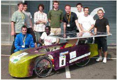
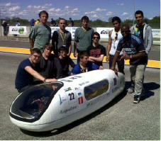
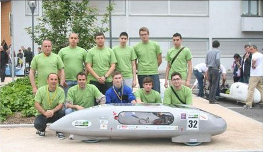

Premier projet réalisé par le Lycée Léonard de Vinci; toujours en partenariat avec le Lycée Diderot.

Second projet également en partenariat avec le Lycée Diderot. Il s'agit de la première version d'Augustine.

Cette année çi, le challenge était quel que peut différent. Il ne fallait pas faire 17,14 km mais 25 km pour une vitesse moyenne minimum de 30 km/h. Les efforts des étudiants ont pu être récompensés car ils on réussis à ce classer 31ième sur 56.
Toisième projet sous le nom d'Augustine II.

La grande soeur d'Augstine à su tenir ses promesses car elle a remportée pas moins de 5 trophés:
Les apparitions du projet Augustine dans la presse.
Article n°1 : Cet article provient du Seine-et-Marne daté du 6 juin 2013, dans cet article il nous expose les multiples récompence gagner par la voiture Augustine durant le challenge de 2013.